| [ Team LiB ] |
|
14.3 Scaling ConsiderationsTo properly use the SVD method presented in Section 14.4, it is necessary to scale the process transfer function matrix such that expected ranges of all scaled inputs and outputs are approximately the same. An output scaling matrix can be found to assure that the scaled outputs cover the same range. Let (*) represent the scaled variables. A diagonal scaling matrix for the output variable is 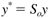 Similarly, a diagonal scaling matrix for the input variable is 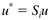 Since the input-output relationship is 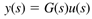 we find 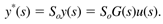 Also, 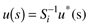 so the scaled input-output relationship is 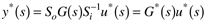 yielding the scaled transfer function matrix 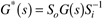 This is illustrated by the following example. Example 14.3: Mixing TankThe mixing tank shown in Figure 14-2 mixes two streams together (plus a possible disturbance stream). It is desirable to control both the level (y1) and the temperature (y2) in the tank. The flow rates of the hot (u1) and cold (u2) streams can be manipulated. The flow rate out of the tank is proportional to the square root of the height of liquid in the tank (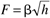). The residence time at steady state is 10 minutes. The steady-state flow rates and temperatures are as follows: Figure 14-2. Mixing tank.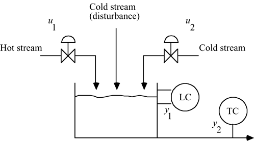
The cross-sectional area of the tank is 0.581 m2. The steady-state tank height is then 0.86 m, with a steady-state volume of 0.5 m3 or 500 liters (assume that the tank is half full at steady state). The input-output transfer function relationship is (see Exercise 3). 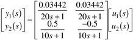 The time constant unit is minutes, and the units of the gains are 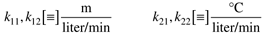 It is interesting that the height time constant is twice the temperature time constant. Notice that if the height unit was centimeters and the temperature unit was degrees Celsius, the transfer function matrix would be 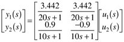 If, in addition, the time units were seconds, the input-output relationship would be 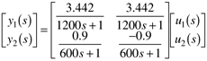 The point of this is that it is very important to understand the units of the variables you are dealing with, and that the parameters can vary (numerically) by orders of magnitudes depending on those units. In this example, the expected range of the manipulated variables is roughly the same, since we assume that the control valves are designed to handled flows roughly twice the nominal steady-state values. That is, we expect the manipulated inputs to be bounded between 0 and 50 liters/minute. Notice that the outputs do not cover the same range. For one thing, the units are different (m for height, and °C for temperature). The steady-state value of the tank height is 0.86 m, with a minimum value of 0 m and a maximum height of 1.72 m. We desire, however, for the height to stay between 20 and 80% of the full tank level. That is, the height should range from 0.344 to 1.376 m. Since we work in deviation variables, and it is convenient to cover a range of -1 to 1, then it is natural to scale by 0.516 m (this is found from 0.86 to 0.344). We can then define a scaled y1 variable as y*1, where 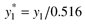 Similarly, it is convenient to scale the second output. The approximate range of temperatures is from 10° to 60°C, with a steady-state value of 35°C. Again, since we are working with deviation variables and it is natural to consider variations of -1 to 1 in the scaled second output, we use 25°C (obtained from 35°C - 10oC) as the scaling factor. The second scaled output is then 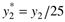 And the scaled output vector is related to the dimensional output vector as 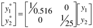 Then from Equation (14.11), 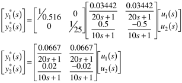 The gains indicate that the outputs will vary approximately the same order of magnitude (there is roughly a factor of 3 difference in the gains). Although not important in this particular example, the inputs can be scaled as well. Since the steady-state manipulated input flow rates are each 25 liters/minute, and we can assume that the flows each range from 0 to 50 liters/minute, it is convenient to scale each input by a factor of 25 liters/minute. 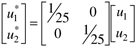 or 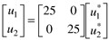 and we can write [combining Equations (14.15) and (14.17)] 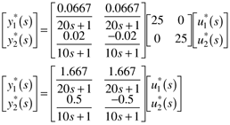 Now it is clear from the gain matrix that a full manipulated variable move will cause the desired tank height range to be violated, while the temperature range will be satisfied. When dealing with dynamic systems, it is always important to know the units of all parameters and variables, and to understand expected operating ranges for all inputs and outputs. It is convenient to scale the inputs and outputs such that the expected operating range is -1 to +1; for one reason, it is easier to compare responses on the same set of plots. Also, some analysis tools (such as the SVD presented in Section 14.4) can be interpreted only on properly scaled systems. |
| [ Team LiB ] |
|